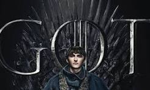

Temporadas
La serie cuenta con 8 temporadas repletas de drama, giros inesperados, batallas épicas y momentos inolvidables.
Cada temporada marca una nueva etapa en la lucha por el Trono de Hierro, con alianzas, traiciones y destinos que cambian capítulo a capítulo.
Temporada 1
Año: 2011
Episodios: 10
Se presentan las principales casas nobles de Westeros: Stark, Lannister, Baratheon y Targaryen.
La serie comienza con una red de intrigas políticas, alianzas y tensiones que marcarán el inicio de la lucha por el Trono de Hierro.
Mientras tanto, al norte, se percibe una amenaza más allá del Muro.
Temporada 2
Año: 2012
Episodios: 10
Con el reino en crisis, varios líderes se autoproclaman reyes, iniciando guerras que afectan a todo Westeros
Las alianzas cambian y el poder se disputa en diferentes frentes. En el otro continente, nuevos jugadores entran en escena, buscando su lugar en el mundo.
Temporada 3
Año: 2013
Episodios: 10
Las tensiones entre las casas nobles aumentan. Se forman nuevas alianzas y la traición se convierte en una herramienta clave en la lucha por el poder.
Se revelan secretos que alteran los planes de varios personajes.
Temporada 4
Año: 2014
Episodios: 10
La guerra por el Trono se intensifica, mientras algunos personajes buscan venganza y otros buscan sobrevivir.
Las batallas se vuelven más personales y algunas casas enfrentan grandes desafíos.
Temporada 5
Año: 2015
Episodios: 10
Los reinos enfrentan nuevas amenazas internas y externas. En el norte, se toma una decisión clave, mientras en el este una líder sigue creciendo en poder y seguidores.
La religión también gana influencia en la política.
Temporada 6
Año: 2016
Episodios: 10
Personajes clave descubren verdades sobre su pasado. Las alianzas comienzan a definirse para lo que será la etapa final de la lucha por Westeros.
Se desarrollan algunas de las batallas más impresionantes de la serie.
Temporada 7
Año: 2017
Episodios: 7
Las casas principales se preparan para la gran guerra. Los enemigos comunes comienzan a unir fuerzas y el conflicto llega a un nivel mundial.
Las estrategias se vuelven más arriesgadas.
Temporada 8
Año: 2019
Episodios: 6
El desenlace de todas las historias. Los personajes enfrentan su destino y se decide quién gobernará Westeros.
La lucha por el trono llega a su fin en medio de sacrificios y decisiones definitivas.
¿Próximas temporadas?
Game of Thrones terminó en 2019, pero están en desarrollo nuevas series basadas en este mundo: